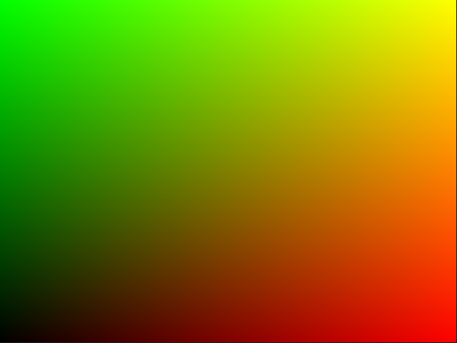
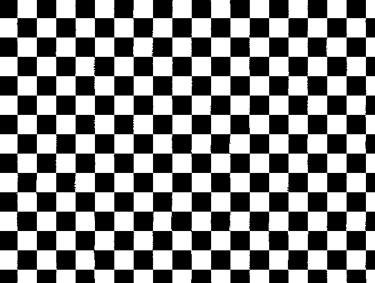
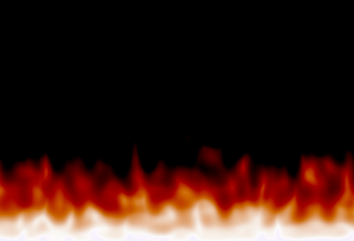

The project directory should now look like this: {% call macros.code("sh") %} . ├── CMakeLists.txt └── main.cpp {% endcall %}
From this point on we can run the following commands to compile and run: {% call macros.code("sh") %} # Only needed the first time, will initialize cmake $ cmake . # To build the executable $ cmake --build . # To run the executable $ ./fire {% endcall %}2. Opening a window
Before one can start any OpenGL program, an OpenGL context must be created. In this case glfw does that for us whenever we create a window. However, this does require some code to setup, and even more code to keep a window open:
{% call macros.code("cpp") %} void error_callback(int error, const char* description) { fprintf(stderr, "Error: %s\n", description); } int main(int argc, char** argv) { if (!glfwInit()) return -2; glfwSetErrorCallback(error_callback); glEnable(GL_DEBUG_OUTPUT); glEnable(GL_DEBUG_OUTPUT_SYNCHRONOUS); // Force the latest version of OpenGL // 4.6 might not be supported by your driver yet, // so try updating first. If that not works try // lower versions, this tutorial should work for 4.3 and above glfwWindowHint(GLFW_CONTEXT_VERSION_MAJOR, 4); glfwWindowHint(GLFW_CONTEXT_VERSION_MINOR, 6); // Create the actual window GLFWwindow* window = glfwCreateWindow(WIDTH, HEIGHT, "fire", nullptr, nullptr); if (!window) return -3; // Bind the context glfwMakeContextCurrent(window); // We don't need depth, this is 2d application glDisable(GL_DEPTH_TEST); // Enable vsync glfwSwapInterval(1); // ANY SETUP CODE COMES HERE while(!glfwWindowShouldClose(window)) { // Clear the screen glClear(GL_COLOR_BUFFER_BIT); // ANY RENDERING/LOOP CODE COMES HERE // Process all input events (mouse and keyboard) glfwPollEvents(); // Signal OpenGL that we are done rendering glfwSwapBuffers(window); } // The window was closed, cleanup glfwDestroyWindow(window); glfwTerminate(); return 0; {% endcall %}3. Creating and displaying a texture
OpenGL is not terribly intuitive when it come to quickly slapping something on the screen. Of course, we are going to leverage it's compute shader feature later, making it a very reasonable choice for this project. But that doesn't take away the fact that the following is going to seem unnecessarily complicated. But I ask you to bear with me here because ironically, the fire effect itself is far less complicated than this part.
3.1 Compiling a quad shader
To appreciate what exactly is going on you must first understand the basics of the shader pipeline. Most rendering situations require two kinds of shaders: a vertex shader followed by a fragment shader. As you may or may not know, rendering is all about triangles, whether the application is a 2d or a 3d one. When loading the application all the triangles are sent to the gpu. These triangles are nothing more than triple of vertices. A vertex shader can then be programmed to apply a transformation over all these vertices. When the position of the vertices is decided OpenGL steps in and performs a set of calculations that project the triangles from 3d space onto the 2d screen. After that, a fragment shader gets called on every pixel on the screen that ought to be colored as part of this triangle.
Despite that being a very minimal and incomplete overview of the classical shader stages, it will suffice for now since we only require them in their most basic form. After all, we just want to draw a quad on the screen that does not move and color it with the generated image. So we add the following two definitions:
{% call macros.code("cpp") %} static const char* quad_shader_vs = R"( #version 460 layout(location = 0) in vec2 vPos; out vec2 uv; void main() { // We can simply copy the vertex x and y positions // straight to the output, using 0 for the 3rd dimension. // The fourth element is depth, convention gives it a value // of 1 if it is not used. gl_Position = vec4(vPos, 0, 1); // Texture coordinates range from [0,1] so we have to shift // the vertices a little to end up with the so called uv coords uv = (vPos + vec2(1)) * 0.5f; } )"; static const char* quad_shader_fs = R"( #version 460 layout(location = 0) uniform sampler2D tex; layout(location = 1) uniform float time; in vec2 uv; out vec4 color; void main() { color = texture(tex, uv); } )"; {% endcall %}In the rest of this post I will refrain from showing the entire string. That way I can show the code with its own syntax highlighting since shaders are written in a language called glsl, not c++.
To actually use these programs we have to tell OpenGL to compile them for us after we have created the window (but before we enter the loop). To make this task a little easier you can use the following utility functions. {% call macros.code("cpp") %} // Add these included at the top of the file #includeIn the setup section of the code we can compile the shaders using these utilities functions. If there are any errors in the shaders of any kind we simply dump the error log and exit the whole application. This is a bit harsh but for small demo applications it is jolly convenient.
{% call macros.code("cpp") %} // ... GLuint quad_vs = CompileShader(GL_VERTEX_SHADER, quad_shader_vs); GLuint quad_fs = CompileShader(GL_FRAGMENT_SHADER, quad_shader_fs); GLuint quad_shader = GenerateProgram(quad_vs, quad_fs); // ... {% endcall %}3.2 Creating a vertex buffer
At this point we have setup the required systems that can handle the rendering of 2d triangles but we haven't actually given it the correct data yet. OpenGL forces us to define this data beforehand. It does this for the very good reason that the communication between the GPU and the CPU is relatively slow. At first sight this is actually a bit surprising because modern GPUs measure their throughput in GB/s. However, the actual time that is required to make a round trip is pretty significant. So significant in fact that it quickly becomes problematic if we wish to send the scene data to the GPU every single frame, a.k.a 60 times per second. Interestingly this constraint comes directly from the speed at which electrons travel and the relatively high distance between the CPU and GPU in your actual computer. Conclusively, we have to create a buffer (called a vertex buffer object) on the GPU once during the setup.
When rendering an object there are a couple of things that we have to specify. A few examples are which buffers are bound to which shader variable and, which shader variables are activated. Usually these remain constant for the same rendering tasks and it would be pretty cumbersome and not to mention error phrone to constantly set up again. As a solution OpenGL provides us with a thing called a Vertex Attribute Object (VAO), which will bundle all those details about how the information is bound to the rendering stages and allow us to restore that state by simply binding just the VAO itself.
{% call macros.code("cpp") %} // 2 triangles, each made up by 3, 2d points. float quad_data[12] = { -1.0, -1.0, 1.0, -1.0, -1.0, 1.0, 1.0, 1.0, -1.0, 1.0, 1.0, -1.0, }; GLuint quad_vao, quad_vbo; glGenVertexArrays(1, &quad_vao); glGenBuffers(1, &quad_vbo); // Binding the vao is required to save the state information glBindVertexArray(quad_vao); // Bind the buffer to GL_ARRAY_BUFFER slot then fill it with the quad data array glBindBuffer(GL_ARRAY_BUFFER, quad_vbo); glBufferData(GL_ARRAY_BUFFER, sizof(quad_data), quad_data, GL_STATIC_DRAW); // Bind the currently bound buffer to variable at location = 0 in the shader glVertexAttribPointer(0, 2, GL_FLOAT, false, 0, nullptr); // Enable the variable at location = 0. glEnableVertexAttribArray(0); // It is good practice to unbind any vao when they are not being used. glBindVertexArray(0); {% endcall %}3.3 Creating textures
The final element required to render the textures are the textures themselves. Using a kernel in image processing almost always requires a double buffered situation. That requirement naturally follows from the fact that the resulting pixel in the output depends on more than one pixel in the original image, making it impossible to replace the pixels inline as we go. So let's create two identical textures in the setup section of code.
{% call macros.code("cpp") %} GLuint buf[2]; for(unsigned int & i : buf) { glGenTextures(1, &i); glBindTexture(GL_TEXTURE_2D, i); glTexImage2D(GL_TEXTURE_2D, 0, GL_RGBA32F, WIDTH, HEIGHT, 0, GL_RGBA, GL_FLOAT, nullptr); glTextureParameteri(i, GL_TEXTURE_MIN_FILTER, GL_LINEAR); glTextureParameteri(i, GL_TEXTURE_MAG_FILTER, GL_LINEAR); } {% endcall %}Now finally we have everything ready to actually execute the instructions that render the textures to the screen. To make it double buffered, we will flip the notion of which is the 'main' texture every frame.
3.4 Making the render call
{% call macros.code("cpp") %} int tick = 0; while(!glfwWindowShouldClose(window)) { glClear(GL_COLOR_BUFFER_BIT); // Use the quad shader glUseProgram(quad_shader); // Bind one of the two textures, based on the current tick glBindTexture(GL_TEXTURE_2D, buf[tick%2]); // Load the vertex attribute object glBindVertexArray(quad_vao); // Dispatch the rendering pipeline glDrawArrays(GL_TRIANGLES, 0, 6); // Unbind the vao glBindVertexArray(0); glfwPollEvents(); glfwSwapBuffers(window); // Increase the frame counter tick++; } {% endcall %}3.5 Sanity checks and rainbows
At this point we still cannot expect to see anything on the screen. After all, we gave the textures no actual data, so OpenGL will just initialize them with a black color. To check whether the entire codebase is working up until now, we would have to initialize the textures with an image or just some random color data. However, this is not super trivial. Especially considering that that code will not be part of the final product. Instead I usually settle for a shortcut where we leave the texture part aside for now but temporarily change the fragment shader to output a color based on the pixel coordinate. That way we can confirm that the rendering pipeline is mostly working. So, if we adjust the fragment shader to look like the following we should get a nice gradient output. The redness grows along the x-axis, and the greenness grows along the y-axis. {% call macros.code("glsl") %} #version 460 layout(location = 0) uniform sampler2D tex; layout(location = 1) uniform float time; in vec2 uv; out vec4 color; void main() { color = vec4(uv, 0, 1); } {% endcall %} 4. Manipulating the textures with a compute shader
Fairly recently (since version 4.3) OpenGL introduced the notion of compute shaders. The idea here is to allow for a very generic compute operations that are not necessarily bound to vertices or fragments. In essence they are not very different from the other shaders, just slightly more free.
4.1 A minimal compute shader
As a first version we might consider a program that will just display a simple example to ensure that the pipeline is working. Since we already have seen the gradient pattern, we might as well try something new, like a checker pattern. Back in my post about the Knight of Hamilton we already discussed what mathematical rule generates a checkboard pattern. Namely: color the block white if \((x+y) % 2 == 0)\ otherwise black. To make this article epilepsy friendly, we could consider scaling the coordinates down by a factor of say 32 so that not every pixel is its own distinct square. {% call macros.code("glsl") %} #version 460 // Define the group size (unrelated to the size of the checkerboard!) // For your GPU you might be forced to lower these numbers layout(local_size_x = 32, local_size_y = 32) in; // Define the screen size variable layout(location = 1) uniform ivec2 size; // Define the texture slots layout(binding = 0, rgba32f) uniform image2D sourceTex; layout(binding = 1, rgba32f) uniform image2D destTex; void main() { // The invocation id maps directly to pixel coords ivec2 storePos = ivec2(gl_GlobalInvocationID.xy); // Stop execution if we are not in a valid pixel if (storePos.x < 0 || storePos.x >= size.x) return; if (storePos.y < 0 || storePos.y >= size.y) return; // Use the checkboard formula to determine the color vec4 color = (storePos.x / 32 + storePos.y / 32) % 2 == 0 ? vec4(0) : vec4(1); imageStore(destTex, storePos, color); } {% endcall %} Then to actually call the shader we have to first compile it in the setup stage: {% call macros.code("cpp") %} GLuint fire_program = GenerateProgram(CompileShader(GL_COMPUTE_SHADER, cs_fire)); {% endcall %} Then call it in the render loop: {% call macros.code("cpp") %} // Bind the shader glUseProgram(fire_program); // Tell it the window size glUniform2i(1, WIDTH, HEIGHT); // Bind one of the textures to the '0' slot glBindImageTexture(0, buf[tick%2], 0, GL_FALSE, 0, GL_READ_ONLY, GL_RGBA32F); // Bind the other to the '1' slot glBindImageTexture(1, buf[(tick+1)%2], 0, GL_FALSE, 0, GL_WRITE_ONLY, GL_RGBA32F); // Dispatch the shader groups of 32 by 32 enough times to cover the entire image. // Again, this 32 refers to the group size, not the size of squares on the checkerboard. glDispatchCompute(WIDTH/32+1, HEIGHT/32+1, 1); {% endcall %} Let's reflect for a second on what is happening here. If you were to implement the same logic as we just did on the cpu you might write the following nested loop:
{% call macros.code("cpp") %} for (int y=0; y4.1 a moving blur kernel
Image processing is a field of computer science whose foundation is heavily dependent on the concept of kernels. This sort of kernel should not be confused with what people call the 'linux kernel'. As far as I know these two concept are completely unrelated, despite the similar name. In image processing when people talk about a kernel they mean a mapping of some pixels of an image onto another image. This mapping often is in the form many-to-one. In other words, the value of the pixel in the output is defined as an expression containing a number of pixels in the input.
In this project we are going to use a very simple kernel that creates blurring effect. This kernel is defined by the following expression:
\(output[x,y] = \frac{input[x+1,y] + input[x, y+1] + input[x-1, y] + input[x, y-1]}{4}\)
In other words, the average of the four neighbouring pixels. Because we are going to apply this filter iteratively, the values slowly spread out indefinitely. However, they do not spread out upward like we expect a flame to do. In order to achieve this effect we simply shift every pixel up in the output. In fact, I found that moving by two pixels every step gives the fire a more realistic hasty feeling.
To make sure the fire effect does not fade away never to come back we introduce a permanent source of energy at the bottom of screen. Therefore, next to kernel we also add an edge case that every pixel lower than y=8 is completely white regardless. Let's see how this translates to the compute shader:
{% call macros.code("glsl") %} void main() { ivec2 storePos = ivec2(gl_GlobalInvocationID.xy); vec2 storePosf = vec2(storePos) / vec2(size); if (storePos.x < 1 || storePos.x >= size.x) return; if (storePos.y < 1 || storePos.y >= size.y) return; // Load the color of the four neighbouring pixels vec4 c0 = imageLoad(sourceTex, storePos + ivec2(1, 0)); vec4 c1 = imageLoad(sourceTex, storePos + ivec2(-1,0)); vec4 c2 = imageLoad(sourceTex, storePos + ivec2(0, 1)); vec4 c3 = imageLoad(sourceTex, storePos + ivec2(0,-1)); // Take the average of the values vec4 newCol = (c0+c1+c2+c3) * 0.25; // Override the color if we are in the bottom of the screen if (storePos.y < 8) newCol = vec4(1); // Write new values two pixels up. imageStore(destTex, storePos + ivec2(0, 2), newCol); } {% endcall %}The result of this adjustment should look something like this. It is this effect that causes the fire to move upwards.
4.2 Cooling down with noise
It doesn't really look like fire yet. The main problem with this is that flames move up uniformly. What we need is some source of randomness that 'cools' the flames in some parts of the image but not others. While it is possible to create a pretty good random function in glsl it is not exactly what we are looking for. After all, flames usually span multiple pixels, meaning that pixels that are close to each other are at least somewhat related.
This correlation between neighbouring pixels a is desirable property for a whole array of applications such as terrain generation, where height of the terrain ought to be continuous. As a result, a lot of research has already been spent on this subject and many algorithms are freely available. The king of such algorithms is undoubtedly the one developed by Ken Perlin. His algorithm is unsurprisingly called Perlin noise. A glsl implementation of this algorithm, among many others, is provided by the github user patriciogonzalezvivo.
To actually animate the fire it is necessary to move the noise map up gradually. Necessary for this feature, among many future animated components, is the current time, which we pipe to the shader using another uniform variable.
{% call macros.code("glsl") %} #version 460 layout(local_size_x = 32, local_size_y = 32) in; layout(location = 0) uniform float time; layout(location = 1) uniform ivec2 size; layout(binding = 0, rgba32f) uniform image2D sourceTex; layout(binding = 1, rgba32f) uniform image2D destTex; // Classic Perlin 3D Noise // by Stefan Gustavson vec4 permute(vec4 x){return mod(((x*34.0)+1.0)*x, 289.0);} vec4 taylorInvSqrt(vec4 r){return 1.79284291400159 - 0.85373472095314 * r;} vec3 fade(vec3 t) {return t*t*t*(t*(t*6.0-15.0)+10.0);} float cnoise(vec3 P){ vec3 Pi0 = floor(P); // Integer part for indexing vec3 Pi1 = Pi0 + vec3(1.0); // Integer part + 1 Pi0 = mod(Pi0, 289.0); Pi1 = mod(Pi1, 289.0); vec3 Pf0 = fract(P); // Fractional part for interpolation vec3 Pf1 = Pf0 - vec3(1.0); // Fractional part - 1.0 vec4 ix = vec4(Pi0.x, Pi1.x, Pi0.x, Pi1.x); vec4 iy = vec4(Pi0.yy, Pi1.yy); vec4 iz0 = Pi0.zzzz; vec4 iz1 = Pi1.zzzz; vec4 ixy = permute(permute(ix) + iy); vec4 ixy0 = permute(ixy + iz0); vec4 ixy1 = permute(ixy + iz1); vec4 gx0 = ixy0 / 7.0; vec4 gy0 = fract(floor(gx0) / 7.0) - 0.5; gx0 = fract(gx0); vec4 gz0 = vec4(0.5) - abs(gx0) - abs(gy0); vec4 sz0 = step(gz0, vec4(0.0)); gx0 -= sz0 * (step(0.0, gx0) - 0.5); gy0 -= sz0 * (step(0.0, gy0) - 0.5); vec4 gx1 = ixy1 / 7.0; vec4 gy1 = fract(floor(gx1) / 7.0) - 0.5; gx1 = fract(gx1); vec4 gz1 = vec4(0.5) - abs(gx1) - abs(gy1); vec4 sz1 = step(gz1, vec4(0.0)); gx1 -= sz1 * (step(0.0, gx1) - 0.5); gy1 -= sz1 * (step(0.0, gy1) - 0.5); vec3 g000 = vec3(gx0.x,gy0.x,gz0.x); vec3 g100 = vec3(gx0.y,gy0.y,gz0.y); vec3 g010 = vec3(gx0.z,gy0.z,gz0.z); vec3 g110 = vec3(gx0.w,gy0.w,gz0.w); vec3 g001 = vec3(gx1.x,gy1.x,gz1.x); vec3 g101 = vec3(gx1.y,gy1.y,gz1.y); vec3 g011 = vec3(gx1.z,gy1.z,gz1.z); vec3 g111 = vec3(gx1.w,gy1.w,gz1.w); vec4 norm0 = taylorInvSqrt(vec4(dot(g000, g000), dot(g010, g010), dot(g100, g100), dot(g110, g110))); g000 *= norm0.x; g010 *= norm0.y; g100 *= norm0.z; g110 *= norm0.w; vec4 norm1 = taylorInvSqrt(vec4(dot(g001, g001), dot(g011, g011), dot(g101, g101), dot(g111, g111))); g001 *= norm1.x; g011 *= norm1.y; g101 *= norm1.z; g111 *= norm1.w; float n000 = dot(g000, Pf0); float n100 = dot(g100, vec3(Pf1.x, Pf0.yz)); float n010 = dot(g010, vec3(Pf0.x, Pf1.y, Pf0.z)); float n110 = dot(g110, vec3(Pf1.xy, Pf0.z)); float n001 = dot(g001, vec3(Pf0.xy, Pf1.z)); float n101 = dot(g101, vec3(Pf1.x, Pf0.y, Pf1.z)); float n011 = dot(g011, vec3(Pf0.x, Pf1.yz)); float n111 = dot(g111, Pf1); vec3 fade_xyz = fade(Pf0); vec4 n_z = mix(vec4(n000, n100, n010, n110), vec4(n001, n101, n011, n111), fade_xyz.z); vec2 n_yz = mix(n_z.xy, n_z.zw, fade_xyz.y); float n_xyz = mix(n_yz.x, n_yz.y, fade_xyz.x); return 2.2 * n_xyz; } void main() { ivec2 storePos = ivec2(gl_GlobalInvocationID.xy); // A special version of the position vector with range [0,1] in both dimensions vec2 storePosf = vec2(storePos) / vec2(size); if (storePos.x < 1 || storePos.x >= size.x) return; if (storePos.y < 1 || storePos.y >= size.y) return; // Choose a 3d point that depends on the pixel location and scrolls // up in the y-axis as time increases vec3 noisePoint = vec3(storePosf*15 - vec2(0, 8*time), 0.5* time); float cooling = abs(cnoise(noisePoint)); // Create a greyscale version of the color value vec4 newCol = vec4(cooling); imageStore(destTex, storePos, newCol); } {% endcall %} Don't forget to send the time to the shader every frame. This allows use to animate the cooling map with a scrolling motion. If we used a static noise map then the fire would converge to a fixed position. {% call macros.code("cpp") %} glUniform1f(0, glfwGetTime()); {% endcall %}
Classical perlin noise generates values in the range [-1,1]. Usually these values are clamped to [0,1] to get a smooth continuous noise map. However, for the purpose of a fire effect I found that taking the absolute value and the consequential rough edges are more desirable.
To incorporate the noise in the effect we simply subtract the noise from the resulting color. It turned out that the raw values provided a bit too much cooling so I decided to scale it down by a constant factor of 0.4 as well as the y coordinate. That last step ensures that the fire is fairly untouched by the cooling map in lower regions of the image and increasingly more later on. Formally, this means that brightness of the flame follows a parabola with respect to height.
{% call macros.code("glsl") %} void main() { ivec2 storePos = ivec2(gl_GlobalInvocationID.xy); vec2 storePosf = vec2(storePos) / vec2(size); if (storePos.x < 1 || storePos.x >= size.x - 1) return; if (storePos.y < 1 || storePos.y >= size.y - 1) return; vec4 c0 = imageLoad(sourceTex, storePos + ivec2(1, 0)); vec4 c1 = imageLoad(sourceTex, storePos + ivec2(-1,0)); vec4 c2 = imageLoad(sourceTex, storePos + ivec2(0, 1)); vec4 c3 = imageLoad(sourceTex, storePos + ivec2(0,-1)); vec4 newCol = (c0+c1+c2+c3) * 0.25; vec3 noisePoint = vec3(storePosf*15 - vec2(0, 8*time), time); float cooling = 0.4 * abs(cnoise(noisePoint)) * storePosf.y; newCol -= vec4(cooling); if (storePos.y < 8) newCol = vec4(1); imageStore(destTex, storePos + ivec2(0,2), newCol); } {% endcall %}The flames should now really start to come to life.

4.3 coloring the flames using stars
There is of course one very obvious and integral part missing: color! Fittingly, the approach that is going to help to add color is color temperature. Color temperature is a way to describe a color using the Kelvin temperature scale. If you are familiar at all with photography you might know that on an overcast day outside it is usually a good idea to set the white balance of your camera to around 4800K. The reason for this is that the sun, like any other star, emits light of a certain color based on its temperature. Behind the atmosphere the sun appears to have a temperature of about 4800K, explaining the camera setting. In any case, the exact color of the light is thus dependent on temperature, which intern is mostly a measure of energy. Hence, we can use the color temperature scale to decide the color of the flames based on some sort of energy value.
Until now we have only used greyscale values, meaning that the red, green, and blue components of the colors are equal. We could therefore arbitrarily choose the float value in the red channel as the representation of energy. Finally, a bit of googling gives us this piece of code to help transform kelvin to a 3 component color vector:
{% call macros.code("glsl") %} vec3 fromColorTemperature(float kelvin) { float temp = kelvin * 0.01f; float r,g,b; if (temp <= 66) { r = 255; g = 99.4708025861 * log(temp) - 161.1195681661; b = temp <= 19 ? 0 : 138.5177312231 * log(temp-10) - 305.0447927307; } else { r = 329.698727446 * pow(temp-60, -0.1332047592); g = 288.1221695283 * pow(temp-60, -0.0755148492); b = 255; } return vec3( clamp(r/255.0f, 0, 1), clamp(g/255.0f, 0, 1), clamp(b/255.0f, 0, 1) ); } {% endcall %}Since this last step is only used for rendering and would cause problems if it were part of the constantly iterating compute shader, we would do best to add this step to fragment shader. Furthermore in the main function we simply add one extra line of code to convert the red channel value, interpreted as a temperature, to an actual color. Of course we have to transform the value a bit to get a get a reasonable value on the kelvin scale. The sun is about 5500K so let's get the smoking hot fire up to 7000K why don't we. Furthermore, to make the fire a bit more believable we have to ensure that it seems only really hot in the center of a flame but quickly gets cooler as we move away. Raising the value to a small power helps achieve this effect. Finally, to remove any weird background colors or artifacts we use the red channel once again as a mask by multiplying with it once more.
{% call macros.code("glsl") %} void main() { color = texture(tex, uv); color = vec4(fromColorTemperature(pow(color.r,6)*7000),0); } {% endcall %} You can almost feel the heat can't you? 4.4 some sideways action for polishing
Although we are definitely close to a great result something still feels a bit off. The fire seems to emit a calmness that is more reminiscent of people watching a fire than the fire itself. To add just a little bit of unpredictability in the mix we introduce some random sideways action. We already have calculated an animated point from which we sample the noise, so to get some more, seemingly uncorrelated, noise we take that point and animate away from there. A noise value we sample from there, which we will call 'stride', can be used to store the pixel not only 2 pixels up, but also randomly to the left or right. I found that the following parameters give a pretty nice result:
{% call macros.code("glsl") %} vec3 noisePoint = vec3(storePosf*15 - vec2(0, 8*time), time); // sample a stride value from a different point in the noise map float stride = cnoise(noisePoint+vec3(time)); // Store the pixel up 2 pixels and randomly to the left or the right depending on the stride imageStore(destTex, storePos + ivec2(stride*3,2), newCol); {% endcall %}The result is something that feels not only more natural but also more threatening as the moving flames give the illusion of a much more aggressive fire. Similarly, the heat of the fire now becomes visible not only through the colors of the flame but also through an effect called turbulent displacement. It is that same wiggly motion that air makes above concrete on a hot summer day, or more simply a barbecue.
5. Questions?
Any burning questions? Or just wanna say hi? Feel free to reach out on LinkedIn or send me an email at hpeters1024@gmail.com.
 {% endblock %}
{% endblock %}